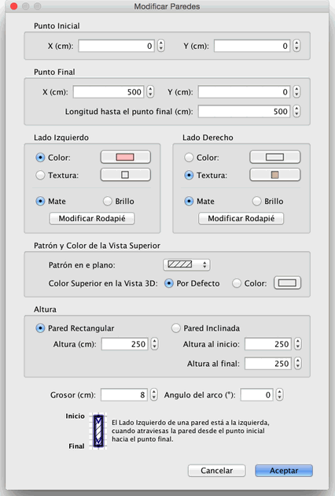

| Editando paredes | |||
Puedes editar la localización y la longitud de las paredes, con el
ratón o con el menú Plano > Modificar paredes.... Cuando una pared está seleccionada en el plano, también puedes mover su punto inicial y final con el indicador de tamaño que aparecen en cada extremo de la pared seleccionada.
|

|
Cuando el puntero del ratón está sobre el punto inicial o final de
la pared seleccionada, cambia para indicar que puedes arrastrar y soltar
el punto para moverlo. Mientras presionas el botón del ratón, un texto
de ayuda muestra la longitud de la pared. Una pared también puede ser editada gracias a su panel, haciendo doble clic en la pared en el plano, o eligiendo Plano > Modificar paredes... después de seleccionarlo.  En el panel pared, puedes cambiar las coordenadas de sus puntos
inicial y final, los colores o las texturas de sus caras izquierda y
derecha, su grosor y su altura. |
|